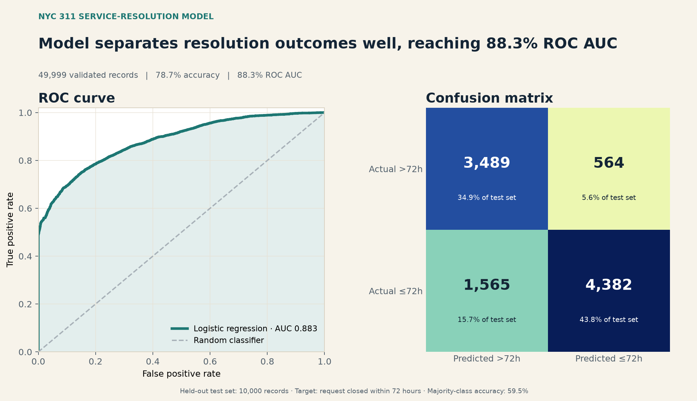

Operations-minded data analyst who turns messy information into decisions people can use.
I’m Ekow Yalley, a University of Michigan graduate with a B.S. double major in Data Science (Econometrics) and Biology. I build models, reporting pipelines, validation systems, and operational data workflows with Python, SQL, and AWS.
Python · SQL · data quality · business intelligence
University of MichiganB.S., double major
Python + SQLanalysis and automation
Validation firstchecks, limits, reproducibility
Operational contextfrom data to decisions
Experience
Data work grounded in operations
May 2021–PresentCurrent
Eco-Rubber Limited
Operations Data Analyst
Build weather-data workflows for tapping decisions, equipment-monitoring systems for maintenance alerts, and a centralized SQL/ETL architecture connecting factory, inventory, purchasing, and shipping records.
Sep 2024–Aug 2025Professional
ATESTEO North America
Test Bench Operator - Data & Automation [Contractor]
Programmed and adjusted drive-test scripts, investigated anomalies in test data, and coordinated with technicians and engineers to keep component tests running and accurately reported.
Aug 2025–Dec 2025Team project
MxV Rail
Data Lead [Contractor]
Structured comparisons across rail cars, operating conditions, and track segments; used Python and Orange to surface recurring differences and turn them into visual material for technical team discussions.
Jan 2021–PresentNonprofit leadership
Equiduct Education Program
Founder
Founded and continue to lead a 501(c)(3) nonprofit that pairs college volunteers with K–12 students for free tutoring and mentorship through a volunteer-led service model.
Selected work
Projects built around real analytical decisions
Each project shows the question, approach, result, and checks behind the work.
Predictive modeling6 validation checks passed
AWS NYC 311 Service Resolution Modeling
Built a leakage-safe logistic-regression baseline using 49,999 validated public NYC 311 records and a target derived from actual creation and closure timestamps.

ROC curve and confusion matrix generated from the model’s saved test-set predictions.
Accuracy
78.7%
Balanced accuracy
79.9%
ROC AUC
88.3%
Result: the model materially outperformed the 59.5% majority-class benchmark. The one limitation is that production use would require time-based validation and drift monitoring.
Built a reproducible Python pipeline that validates sales and customer files, joins them, aggregates regional/category reporting, and reconciles $7,816.00 from source to output.
Result: eight pipeline checks and four unit tests pass, with revenue reconciling exactly from source to final output. The current sample contains 48 transactions.
As Data Lead, organized months of train-run data into car-, condition-, and segment-level comparisons, surfaced recurring differences in rail-car behavior, and built comparative visual material for technical discussions about maintenance and safety priorities.
Private-data note: the underlying rail dataset and code cannot be published.